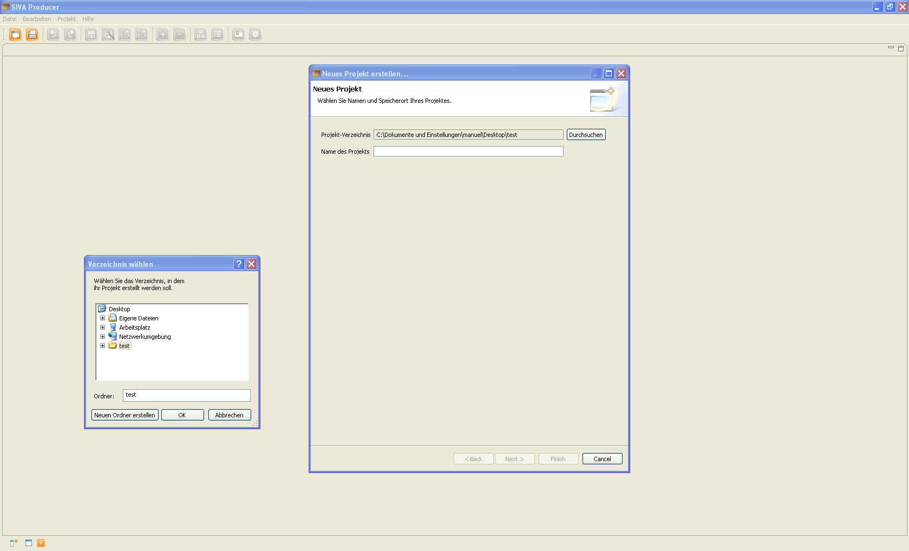

Zum Anlegen eines interaktiven Video-Projekts wird durch den Klick auf den Projekt-Anlegen-Button oder die Auswahl von "neues Projekt" im Datei-Menü folgender Dialog zum Anlegen eines neuen Projektes geöffnet:

Nach der Auswahl eines Speicherortes durch einen Klick auf den Durchsuchen-Button
und Navigation zum gewünschten Verzeichnis im Verzeichnis-Explorer kann ein
Projektname festgelegt werden. Danach kann mit dem Erstellen des interaktiven Videos
begonnen werden.